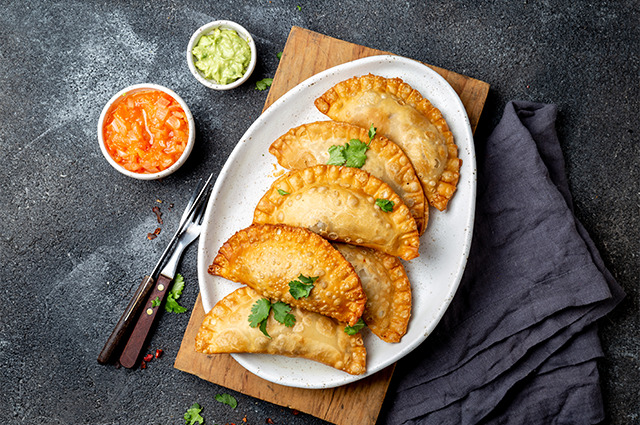
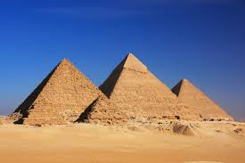

Experiencias
Publicar Experiencias
Rio de Janeiro, Brasil
Experiencia de Destino:“La playa divina, pero esta muy lleno en temporada” Los precios son accesibles dependiendo el lugar... -Martina

Tour turquia
Experiencia de Tour:“Me encanta hacer cosas locas y fuera de lo común, esta fue una de ellas, aunque nos costo encontrar un dia donde se pueda volar en globo, agradezco que se haya podido, sin duda de las mejor experiencias... -Martin
Bariloche
Experiencia de Destino: “Me encanta viajar por Argentina, el sur es de mis destinos favoritos” Es hermoso pero muy caro. Depende la época en la que... -Sofia

Gastronomia Grecia
Experiencia de Gastronomia: “Soy amante de la gastronomia, probe muchos lugares y comidas de mundo, pero sin dudas, cenar en lo alto de Santorini en -Yalos- fue increible, la vista mas las delicias... -Carlos

Gastronomia, NY
Experiencia de Gastronomia: “Soy Argentina y cuando viajo, ademas de obviamente probar la comida tipica de mi destino, me gusta también probar comida Argentina en diferentes partes del mundo... -Pilar

Tour Egipto
Experiencia de Tour: “El tour de las piramides de Egipto es sin dudas de las mejores cosas que viví. Tienen una historia tan interesante y son tan impactantes... -Joaquin

Museo, Nueva York
Experiencia de Tour: “El MET de los museos mas importantes de Nueva York contiene mucha historia y piezas muy interesantes, considero escencial visitarlo... -Maria